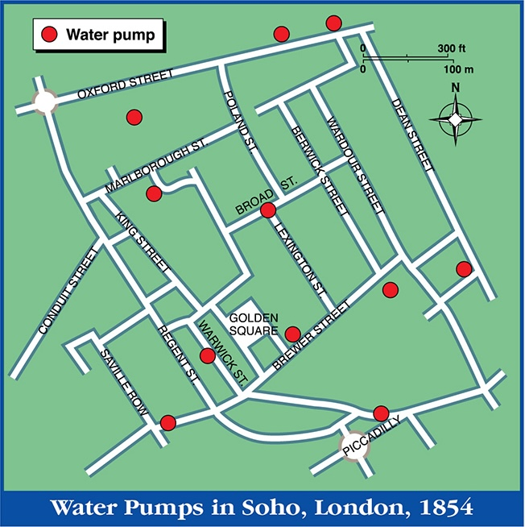

Welcome to CEVE 101
Tue., Aug. 27
Meet the Professor

- Assistant Professor of Civil and Environmental Engineering
- dossgollin-lab.github.io
- jdossgollin@rice.edu
- Office hours: book on Calendly
My background


Origins of Environmental Engineering


Clean Drinking Water

Megaprojects

Transportation

Natural Disasters

Decaying Infrastructure

Inadequate Infrastructure

Unequal Burdens

Water Pollution

Residual Risk